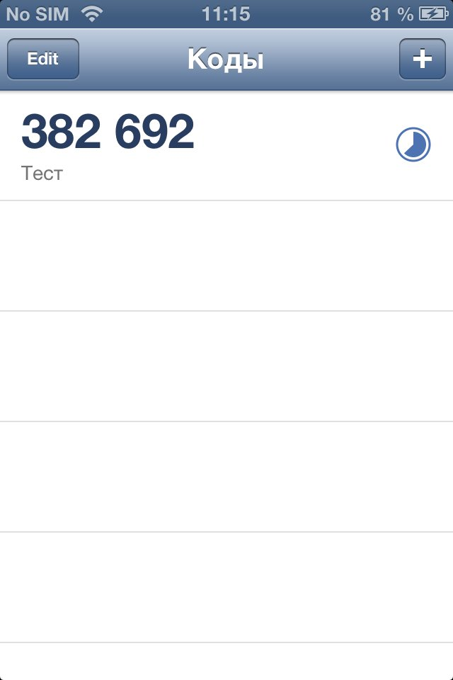
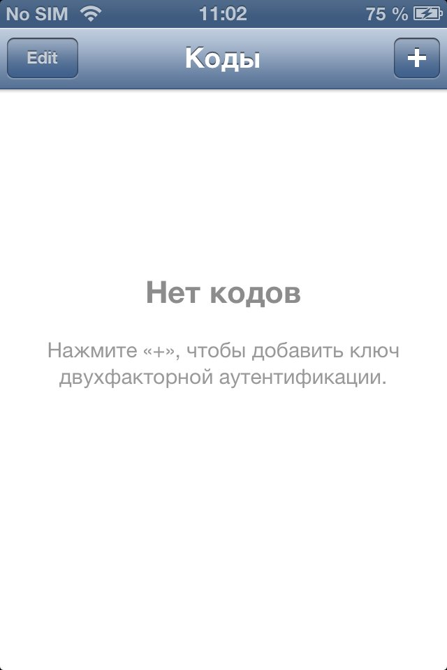
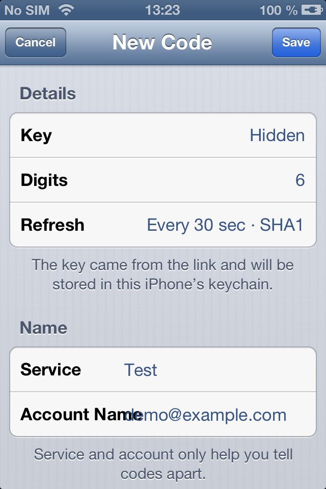

CodesКоды
Two-factor authentication codesКоды двухфакторной аутентификации
Six- or eight-digit TOTP codes for Google, GitHub, VK, Telegram and any other service that offers an authenticator app. Works offline; secret keys stay in the iPhone keychain and never leave the device.
Шести- и восьмизначные TOTP-коды для Google, GitHub, ВКонтакте, Telegram и любого сервиса, который предлагает приложение-аутентификатор. Работает без интернета; секретные ключи хранятся в связке ключей iPhone и никуда не отправляются.
- Add an account by scanning its QR code with the cameraДобавление аккаунта сканированием QR-кода камерой
- Or paste the key or an otpauth:// link by handИли вставьте ключ либо ссылку otpauth:// вручную
- SHA-1, SHA-256 and SHA-512; 6 or 8 digitsSHA-1, SHA-256 и SHA-512; 6 или 8 цифр
- Tap a code to copy itНажмите на код, чтобы скопировать
- English and RussianАнглийский и русский языки
Tip: set the date and time to “Set Automatically” — the codes depend on the clock.
Совет: включите «Дата и время → Автоматически» — коды зависят от часов.
ScreenshotsСнимки экрана



InformationИнформация
VersionВерсия1.2.4
SizeРазмер82 KB
RequiresТребуетсяiOS 6+
LanguagesЯзыкиEnglish, RussianАнглийский, русский
What’s newЧто нового
1.2.4 — Package page in Cydia, open-source acknowledgements.Страница пакета в Cydia, благодарности авторам open-source.
AcknowledgementsБлагодарности
quirc -- QR-code recognition library Copyright (C) 2010-2012 Daniel Beer <dlbeer@gmail.com> ISC License =========== Permission to use, copy, modify, and/or distribute this software for any purpose with or without fee is hereby granted, provided that the above copyright notice and this permission notice appear in all copies. THE SOFTWARE IS PROVIDED "AS IS" AND THE AUTHOR DISCLAIMS ALL WARRANTIES WITH REGARD TO THIS SOFTWARE INCLUDING ALL IMPLIED WARRANTIES OF MERCHANTABILITY AND FITNESS. IN NO EVENT SHALL THE AUTHOR BE LIABLE FOR ANY SPECIAL, DIRECT, INDIRECT, OR CONSEQUENTIAL DAMAGES OR ANY DAMAGES WHATSOEVER RESULTING FROM LOSS OF USE, DATA OR PROFITS, WHETHER IN AN ACTION OF CONTRACT, NEGLIGENCE OR OTHER TORTIOUS ACTION, ARISING OUT OF OR IN CONNECTION WITH THE USE OR PERFORMANCE OF THIS SOFTWARE.